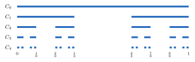

Chapter 5. The Cantor Set*
This short chapter builds one example. It can be skipped. Later chapters use it only in Example 9.2.8, a few exercises, and the starred Section 17.6, which builds the Cantor function. Start with \([0,1]\). Remove the open middle third. Then remove the open middle third of each of the two pieces that are left. Keep going forever. What is left at the end is the Cantor set.
The Cantor set is a test case for intuition. It is compact. It has no isolated points. The intervals removed to build it have total length \(1\), so it seems that almost nothing is left. It contains no open intervals at all. Yet it is uncountable. It returns in Chapter 9 as an example of a set of measure zero.
5.1 Construction of the Cantor Set
Definition 5.1.1 (Construction of the Cantor Set).
Define \[\begin{array}{ccc}C_0 & = & [0,1]\\ & = & J_{0,1},\end{array}\] \[\begin{array}{ccccc}C_1 & = & [0,1/3]& \cup & [2/3,1] \\ & = & J_{1,1}& \cup & J_{1,2},\end{array}\] \[\begin{array}{ccccccccc}C_2 & = & [0,1/9]& \cup & [2/9,1/3] & \cup & [2/3,7/9]& \cup & [8/9,1]\\ & = & J_{2,1} & \cup & J_{2,2} & \cup & J_{2,3} & \cup & J_{2,4},\end{array}\] and in general, \(C_{n+1}\) is obtained from \(C_n\) by removing the open middle third of each closed interval in \(C_n\). That is, each interval \([a,b]\) in \(C_n\) is replaced by the two intervals \(\left[a,a+\frac{b-a}{3}\right]\) and \(\left[b-\frac{b-a}{3},b\right]\). This gives \[C_n=\bigcup_{i=1}^{2^n} J_{n,i},\quad\text{where }J_{n,i}=\left[\frac{k_{n,i}}{3^n},\frac{k_{n,i}+1}{3^n}\right]\] for some \(k_{n,i}\in\mathbb{N}_0\). The intervals are numbered from left to right. Define the Cantor set to be \[C=\bigcap_{n=0}^\infty C_n.\]

Lemma 5.1.2. For each \(n\in\mathbb{N}_0\), the following hold.
The intervals \(J_{n,1},\dots,J_{n,2^n}\) are pairwise disjoint, and each has length \(\frac{1}{3^n}\).
The left endpoints of \(J_{n,1},\dots,J_{n,2^n}\) are exactly the numbers \(\sum_{k=1}^n\frac{d_k}{3^k}\) with each \(d_k\in\{0,2\}\). (For \(n=0\), this sum is \(0\).)
The endpoints of each \(J_{n,i}\) are in \(C\).
Proof. Parts (1) and (2) are proved together by induction on \(n\). For \(n=0\), \(C_0=J_{0,1}=[0,1]\) has length \(1=\frac{1}{3^0}\) and left endpoint \(0\). Suppose (1) and (2) hold for \(n\). Let \(J_{n,i}=\left[s,s+\frac{1}{3^n}\right]\) be one of the intervals of \(C_n\). Removing its open middle third leaves \[\left[s,s+\frac{1}{3^{n+1}}\right]\quad\text{and}\quad\left[s+\frac{2}{3^{n+1}},s+\frac{1}{3^n}\right].\] Each has length \(\frac{1}{3^{n+1}}\). They are disjoint, and they lie inside \(J_{n,i}\). Since the intervals of \(C_n\) are pairwise disjoint, all \(2\cdot 2^n=2^{n+1}\) intervals of \(C_{n+1}\) are pairwise disjoint. Their left endpoints are \(s+\frac{0}{3^{n+1}}\) and \(s+\frac{2}{3^{n+1}}\), where \(s=\sum_{k=1}^n\frac{d_k}{3^k}\) with each \(d_k\in\{0,2\}\). These are exactly the sums \(\sum_{k=1}^{n+1}\frac{d_k}{3^k}\) with each \(d_k\in\{0,2\}\). So (1) and (2) hold for \(n+1\).
For (3), let \(p\) be an endpoint of \(J_{n,i}\). The display above shows \(p\) is also an endpoint of one of the two intervals of \(C_{n+1}\) inside \(J_{n,i}\). By induction, \(p\) is an endpoint of an interval of \(C_m\), and so \(p\in C_m\), for every \(m\ge n\). Also \(p\in C_n\subset C_m\) for every \(m\le n\). So \(p\in C\).
∎
Theorem 5.1.3. \(C\) is compact and nonempty.
Proof. The endpoints of \(J_{n,i}\), \(n=1,2,\dots\) are in \(C\) by Lemma 5.1.2, so \(C\ne\emptyset\). Also, each \(J_{n,i}\) is compact by the Heine–Borel Theorem (Theorem 4.2.14), so \(C_n\) is compact for \(n=1,2,\dots\) by Exercise 4.2.5. Also, \(C_{n+1}\subset C_n\) for all \(n\). Therefore, by Theorem 4.2.12, \(C\) is compact.
∎
Theorem 5.1.4. Every point of \(C\) is a limit point of \(C\).
Proof. Let \(\varepsilon>0\). Let \(x\in C\). Choose \(m\in\mathbb{N}\) such that \((1/3)^m<\varepsilon\). Since \(x\in C_m\), \(x\in J_{m,i}\) for some \(i\), \(i=1,\dots,2^m\). But \[J_{m,i}=\left[\frac{k_{m,i}}{3^m},\frac{k_{m,i}+1}{3^m}\right],\] so the length of \(J_{m,i}\) is \((1/3)^m<\varepsilon\). Thus \(J_{m,i}\subset (x-\varepsilon,x+\varepsilon)\). Therefore, both end points of \(J_{m,i}\) are in \(C\cap (x-\varepsilon,x+\varepsilon)\) by Lemma 5.1.2. At least one of them is not \(x\), and thus \(\bigl(C\cap (x-\varepsilon,x+\varepsilon)\bigr)\setminus\{x\}\ne\emptyset\).
∎
So \(C\) has no isolated points. A closed set with no isolated points is called perfect. The Cantor set is perfect.
Theorem 5.1.5. The sum of the lengths of the intervals removed in constructing \(C_1\) from \(C_0\), \(C_2\) from \(C_1\), and so on, is \(1\).
Proof. When constructing \(C_1\) from \(C_0\), an interval of length \(1/3\) was removed. At step \(n\), \(2^{n-1}\) intervals of length \((1/3)^n\) were removed. Thus the sum of the length of the intervals removed is \[2^0\frac{1}{3}+2\frac{1}{3^2}+\cdots+2^{n-1}\frac{1}{3^n}+\cdots = \sum^\infty_{n=1}\frac{2^{n-1}}{3^n} = \frac{1}{3}\sum_{n=0}^\infty \left(\frac{2}{3}\right)^n =\frac{1}{3}\cdot\frac{1}{1-2/3}=1.\] Here the infinite sum means the limit of the sums of the first \(n\) terms. By Exercise 1.2.7, \[\sum_{k=1}^n\frac{2^{k-1}}{3^k}=\frac13\sum_{i=0}^{n-1}\left(\frac23\right)^i=\frac13\cdot\frac{1-(2/3)^n}{1-2/3}=1-\left(\frac23\right)^n,\] which converges to \(1\) by Example 3.1.7. The same argument shows \(\sum_{i=0}^\infty r^i=\frac{1}{1-r}\) whenever \(|r|<1\). This formula is used again below. Infinite series are studied in Chapter 10.
∎
So the intervals removed have total length \(1\), the length of \([0,1]\). In this sense \(C\) has length \(0\). Example 9.2.8 makes this precise. It shows \(C\) has measure zero.
Exercises
Exercise 5.1.1. Prove that the sum of the lengths of the intervals in \(C_n\) is \(\left(\frac23\right)^n\). Use this to give another proof of Theorem 5.1.5. [Solution]
Exercise 5.1.2. Let \(P\) be the set of all endpoints of the intervals \(J_{n,i}\), for \(n\in\mathbb{N}_0\) and \(i=1,\dots,2^n\). Prove that \(P\) is countable. [Hint]
5.2 Ternary Expansion of Elements of the Cantor Set
A decimal expansion writes a number using powers of \(10\). A ternary expansion uses powers of \(3\). The Cantor set is built by cutting intervals into thirds, so ternary expansions describe it well. A number is in \(C\) exactly when it has a ternary expansion that uses only the digits \(0\) and \(2\). This description shows \(C\) is uncountable.
Theorem 5.2.1. \(C\) contains no open intervals.
Proof.
Assume by way of contradiction that \((a,b)\subset C\) for some \(a<b\). By the Archimedean Principle (Theorem 1.7.8), choose \(n\in\mathbb{N}\) with \(\frac1n<\frac{b-a}{2}\). Since \(3^n>n\), \(\frac{1}{3^n}<\frac{b-a}{2}\). Let \(m=\frac{a+b}{2}\). Since \(m\in C\subset C_n\), \(m\in J_{n,i}\) for some \(i\). Every point of \(J_{n,i}\) is within \(\frac{1}{3^n}<\frac{b-a}{2}\) of \(m\). So \(J_{n,i}\subset(a,b)\subset C\).
Let \(M\) be the open middle third of \(J_{n,i}\). It is removed in constructing \(C_{n+1}\). So the points of \(M\) are not in the two intervals of \(C_{n+1}\) inside \(J_{n,i}\). They are not in the other intervals of \(C_{n+1}\) either. Those lie inside the intervals \(J_{n,j}\) with \(j\ne i\), which are disjoint from \(J_{n,i}\) by Lemma 5.1.2. So \(M\cap C_{n+1}=\emptyset\). But \(M\) is nonempty and \(M\subset J_{n,i}\subset C\subset C_{n+1}\). This is a contradiction.
∎
Definition 5.2.2. Let \(x\in[0,1]\). Let \(n_1\in\{0,1,2\}\) be the largest integer such that \[\frac{n_1}{3}<x.\] (If \(x=0\), no such \(n_1\) exists. In that case, use \(.000\dots\).) Having chosen \(n_1,\dots,n_k\), let \(n_{k+1}\in\{0,1,2\}\) be the largest integer such that \[\frac{n_1}{3}+\frac{n_2}{3^2}+\cdots+\frac{n_k}{3^k}+\frac{n_{k+1}}{3^{k+1}}<x.\] The expression \(.n_1n_2n_3\dots\) is called a ternary expansion of \(x\). In general, if \(x=\sum_{k=1}^\infty \frac{n_k}{3^k}\), where \(n_k\in\{0,1,2\}\) for all \(k\in\mathbb{N}\), \(.n_1n_2n_3\dots\) is called a ternary expansion of \(x\).
Remark 5.2.3. The sum \(\sum_{k=1}^\infty\frac{n_k}{3^k}\) means the limit of the partial sums \(s_m=\sum_{k=1}^m\frac{n_k}{3^k}\). This limit always exists. The partial sums increase, and by Exercise 1.2.7, \[s_m\le\sum_{k=1}^m\frac{2}{3^k}=1-\frac{1}{3^m}<1.\] So \(\{s_m\}\) converges by the Monotone Convergence Theorem (Theorem 3.2.13). The digits chosen in the first part of Definition 5.2.2 satisfy \(s_m<x\le s_m+\frac{1}{3^m}\) for every \(m\), by Exercise 5.2.1. So \(s_m\to x\), and \(.n_1n_2n_3\dots\) really is a ternary expansion of \(x\).
Example 5.2.4. Let \(x=\frac{1}{3}\). For \[\frac{n_1}{3}<\frac{1}{3},\quad n_1=0.\] For \[\frac{0}{3}+\frac{n_2}{3^2}<\frac{1}{3},\quad n_2=2.\] For \[\frac{0}{3}+\frac{n_2}{3^2}+\frac{n_3}{3^3}<\frac{1}{3},\quad n_3=2.\] Now \[\begin{aligned} .0222\dots&=\sum_{k=2}^\infty \frac{2}{3^k} \\ &=\frac{2}{9}\sum_{k=0}^\infty\left(\frac{1}{3}\right)^k \\ &= \frac{2}{9}\cdot\frac{1}{1-1/3}=\frac{1}{3}. \end{aligned}\] So \(.0222\dots\) is the ternary expansion of \(\frac{1}{3}\). Notice \(\frac{1}{3}=.100\dots\) (base \(3\)). So \(\frac{1}{3}\) has two ternary expansions.
Definition 5.2.5. The ternary expansion \(x=.n_1n_2\dots\) is finite or terminating if there exists an \(m\in\mathbb{N}\) such that \(n_k=0\) for all \(k>m\).
Example 5.2.6. Notice if \(x\) has a terminating ternary expansion, its ternary expansion is not unique. This happens when \(x=\frac{a}{3^m}\), \(a\in\mathbb{N}\), \(0<a<3^m\), and \(a\) is not a multiple of \(3\). In this case, \[x=\frac{a_1}{3}+\cdots+\frac{a_m}{3^m},\quad a_m\in\{1,2\}.\] If \(a_m=1\), \[x=\frac{a_1}{3}+\cdots+\frac{0}{3^m}+\sum_{k=m+1}^\infty\frac{2}{3^k},\] and if \(a_m=2\), \[x=\frac{a_1}{3}+\cdots+\frac{1}{3^m}+\sum_{k=m+1}^\infty\frac{2}{3^k}.\] If \(a_m=1\), consider only the infinite expansion. If \(a_m=2\), consider only the finite expansion.
Theorem 5.2.7. Let \(x\in[0,1]\). Then \(x\in C\) if and only if \(x\) has a ternary expansion \(.n_1n_2n_3\dots\) with \(n_k\in\{0,2\}\) for all \(k\in\mathbb{N}\).
Proof.
(\(\Leftarrow\)) Suppose \(x=\sum_{k=1}^\infty\frac{n_k}{3^k}\) with each \(n_k\in\{0,2\}\). Let \(m\in\mathbb{N}_0\) and let \(s_m=\sum_{k=1}^m\frac{n_k}{3^k}\). For \(p>m\), by Exercise 1.2.7, \[0\le s_p-s_m=\sum_{k=m+1}^p\frac{n_k}{3^k}\le\sum_{k=m+1}^p\frac{2}{3^k}=\frac{1}{3^m}-\frac{1}{3^p}<\frac{1}{3^m}.\] Letting \(p\to\infty\), Theorem 3.2.7 gives \(s_m\le x\le s_m+\frac{1}{3^m}\). By Lemma 5.1.2, \(\left[s_m,s_m+\frac{1}{3^m}\right]\) is one of the intervals of \(C_m\). So \(x\in C_m\). Since \(m\) was arbitrary, \(x\in C\).
(\(\Rightarrow\)) Suppose \(x\in C\). For each \(m\in\mathbb{N}_0\), \(x\in C_m\). Since the intervals of \(C_m\) are disjoint, \(x\) is in exactly one of them. Call it \(\left[s_m,s_m+\frac{1}{3^m}\right]\). Then \(s_0=0\). The interval of \(C_{m+1}\) containing \(x\) lies inside an interval of \(C_m\) that contains \(x\), so it lies inside \(\left[s_m,s_m+\frac{1}{3^m}\right]\). By the proof of Lemma 5.1.2, its left endpoint \(s_{m+1}\) is \(s_m\) or \(s_m+\frac{2}{3^{m+1}}\). So \(n_{m+1}=3^{m+1}(s_{m+1}-s_m)\) is \(0\) or \(2\). By induction, \(s_m=\sum_{k=1}^m\frac{n_k}{3^k}\) for all \(m\). Since \(s_m\le x\le s_m+\frac{1}{3^m}\), \(|x-s_m|\le\frac{1}{3^m}\), which converges to \(0\) by Example 3.1.7. So \(s_m\to x\), and \(x=\sum_{k=1}^\infty\frac{n_k}{3^k}\) with each \(n_k\in\{0,2\}\).
∎
For example, \(\frac13=.1000\dots=.0222\dots\) is in \(C\), since its second expansion uses only \(0\)’s and \(2\)’s.
Theorem 5.2.8. \(C\) is uncountable.
Proof. By Theorem 5.2.7, \(C\sim 2^\mathbb{N}\). So \(C\) is uncountable.
In more detail, define \(f:2^\mathbb{N}\to C\) by \(f(\{b_k\})=\sum_{k=1}^\infty\frac{2b_k}{3^k}\). By Theorem 5.2.7, \(f\) maps \(2^\mathbb{N}\) onto \(C\). To see \(f\) is one-to-one, let \(\{b_k\}\ne\{c_k\}\). Let \(j\) be the first index with \(b_j\ne c_j\), and say \(b_j=1\) and \(c_j=0\). The estimate in the proof of Theorem 5.2.7 gives \[f(\{b_k\})-f(\{c_k\})\ge\frac{2}{3^j}-\sum_{k=j+1}^\infty\frac{2}{3^k}=\frac{2}{3^j}-\frac{1}{3^j}>0.\] So \(f\) is a bijection, and \(C\sim2^\mathbb{N}\). Since \(2^\mathbb{N}\) is uncountable by Theorem 2.3.3, so is \(C\).
∎
Example 5.2.9. Since \(\frac{1}{4}=.020202\dots\), \(\frac{1}{4}\in C\). To check the expansion, notice \[.020202\dots=\sum_{j=1}^\infty\frac{2}{3^{2j}}=\frac29\sum_{j=0}^\infty\left(\frac19\right)^j=\frac29\cdot\frac{1}{1-1/9}=\frac14.\] Every endpoint of every \(J_{n,i}\) has the form \(\frac{k}{3^n}\). The number \(\frac14\) does not, since \(3^n=4k\) is impossible when \(3^n\) is odd and \(4k\) is even. So \(C\) contains points that are not endpoints.
Exercises
Exercise 5.2.1. Let \(x\in(0,1]\) and let \(n_1,n_2,n_3,\dots\) be the digits chosen in Definition 5.2.2. Let \(s_0=0\) and \(s_m=\sum_{k=1}^m\frac{n_k}{3^k}\). Prove by induction that \(s_m<x\le s_m+\frac{1}{3^m}\) for all \(m\in\mathbb{N}_0\).
Exercise 5.2.2. Find the ternary expansions of \(\frac19\) and \(\frac23\) given by Definition 5.2.2. Then find a second ternary expansion of each.
Exercise 5.2.3. Prove that \(\frac34\in C\). [Hint]
Exercise 5.2.4. Find \(4\) points in the Cantor set, \(2\) of which are not endpoints of the intervals \(J_{n,i}\). [Solution]
Exercise 5.2.5. Prove that \(C^\circ=\emptyset\) and \(C'=C\). [Hint]
Notes
Henry Smith described a set like this one in 1875 [66]. Georg Cantor described it in 1883 [11].